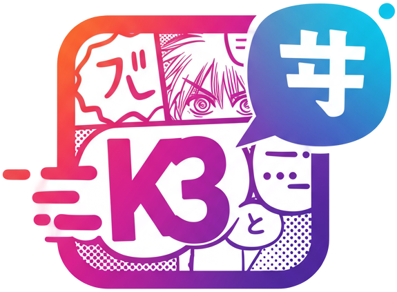
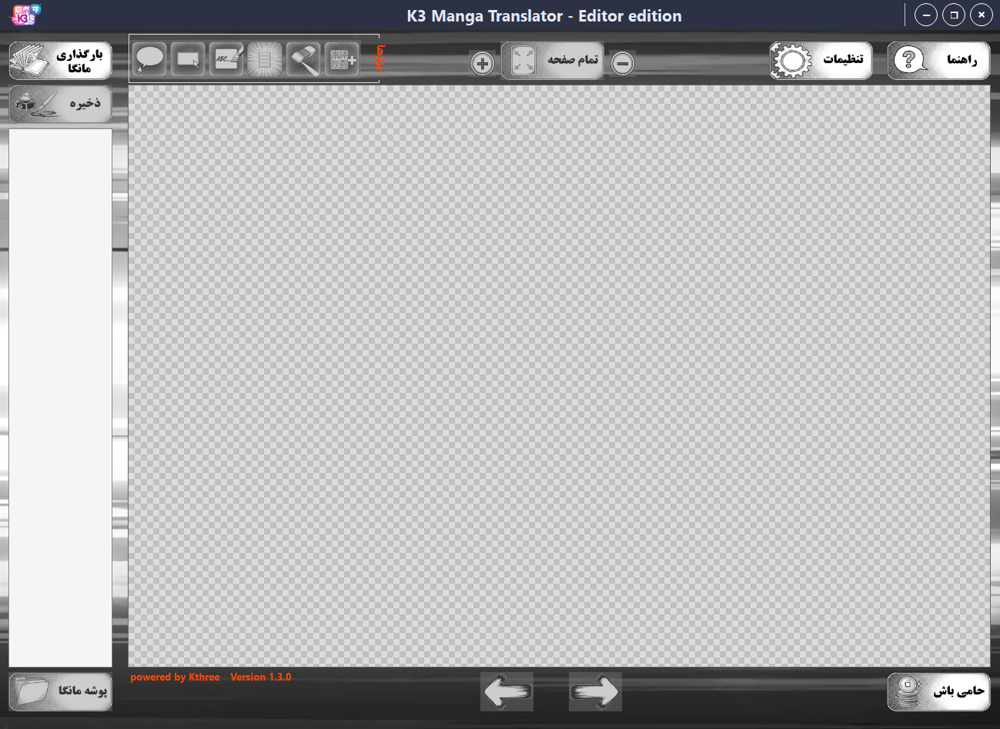

ایدهی ساخت این برنامه از یک مشاهدهی دقیق و درکِ یک نیاز واقعی متولد شد. ما بارها دیدهایم که مترجمهای مانگا چقدر با ابزارهای پراکنده درگیر هستند؛ یک برنامه برای پاکسازی، یکی برای استخراج متن و سومی برای تایپ! و بدتر از همه، هیچکدوم از این ابزارهای خارجی، دغدغههای زبان فارسی و راستچین رو به خوبی درک نمیکردن.
تیم K3 تصمیم گرفت به این پراکندگی پایان بده. ما این ابزار رو توسعه دادیم تا "فناوری" رو در خدمت "هنر" قرار بدیم. هدف این بود که یک محیط یکپارچه و تخصصی بسازیم تا مترجمها، بدون درگیری با مشکلات فنی، فقط روی کیفیت ترجمه تمرکز کنند. برای کمک به جامعهی مترجمان فارسیزبان، این برنامه با تمام قابلیتهای حرفهایاش به صورت کاملاً رایگان منتشر شده است.

این برنامه یک ایستگاه کاری تمامعیار است که پروسهی ترجمه مانگا را از صفر تا صد را پوشش میدهد. طراحی آن به گونهای است که هر مترجم، فارغ از سطح دانش فنی، بتواند به صورت انفرادی و بدون نیاز به هیچ ابزار جانبی دیگری (مثل فتوشاپ)، یک چپتر کامل را با کیفیت مطلوب ترجمه و ادیت کند.
ساز و کار برنامه بر پایه هوش مصنوعی رایگان و قدرتمند Gemini بنا شده است. برخلاف مترجمهای معمولی، این برنامه تمام صفحات مانگا را به صورت یکجا برای هوش مصنوعی ارسال میکند. با استفاده از پرامپتهای تخصصی و قوی که در برنامه تعبیه شده، هوش مصنوعی ابتدا کل داستان، شخصیتها و فضای مانگا را درک میکند و سپس یک ترجمهی یکپارچه، روان و کاملاً منطبق با کانتکست (Context) داستان به شما تحویل میدهد.
پس از دریافت ترجمه، قدرت در دستان شماست. میتوانید ترجمهها را دانه به دانه روی تصویر قرار دهید و با ویرایشگر اختصاصی، کنترل همه چیز را به دست بگیرید. از تغییر نوع پسزمینه (سفید، شفاف، مات) گرفته تا تنظیم دقیق فونت، رنگ و سایز. حتی اگر متن روی بافتهای پیچیده باشد، مدل هوش مصنوعی داخلی (LaMa) به کمک شما میآید تا نوشتههای اصلی را به تمیزترین شکل ممکن پاک کنید.
نگران زمان نباشید! در پایان کار (یا هر زمان که خسته شدید)، میتوانید همه چیز را در قالب یک «فایل پروژه» ذخیره کنید تا در دفعات بعد، دقیقاً از همان نقطهای که کار را رها کردید، با حفظ تمام لایهها و تنظیمات، ادامه دهید.
تمام این توضیحات، تنها بخشی از قدرت این نرمافزار است. در ادامه، لیست کامل قابلیتهایی که برای راحتی شما طراحی شده را مشاهده میکنید: